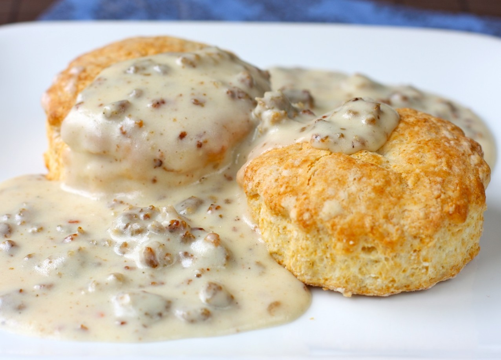

Description:
There's nothing quite like the comfort of warm, flaky biscuits smothered in
rich, creamy gravy. This classic Southern dish is a staple for breakfast or brunch, offering a
perfect blend of textures and flavors. The biscuits are buttery and tender, while the gravy is
savory and indulgent, made from pan drippings and a hint of spice. It's a dish that brings a
taste of Southern hospitality to your table, whether you're a seasoned cook or trying it for
the first time.
Ingredients
For the Biscuits:
- 2 cups all-purpose flour
- 1 tablespoon baking powder
- 1/2 teaspoon baking soda
- 1 teaspoon salt
- 6 tablespoons unsalted butter, chilled and cut into small cubes
- 3/4 cup buttermilk, cold
- 1 tablespoon melted butter (for brushing the tops)
For the Gravy:
- 1/4 pound breakfast sausage (optional for sausage gravy)
- 2 tablespoons bacon drippings or unsalted butter
- 2 tablespoons all-purpose flour
- 2 cups whole milk
- Salt and black pepper to taste
- 1/4 teaspoon crushed red pepper flakes (optional, for a bit of heat)
Steps
Prepare the Biscuits:
- Preheat your oven to 450°F (230°C) and line a baking sheet with parchment paper.
- In a large mixing bowl, whisk together the flour, baking powder, baking soda, and
salt.
- Cut the chilled butter into the dry ingredients using a pastry cutter or your fingers
until the mixture resembles coarse crumbs.
- Slowly add the cold buttermilk, stirring just until the dough comes together. Be
careful not to overmix.
- Turn the dough out onto a lightly floured surface and gently knead it a few times. Pat
it into a 3/4-inch thick rectangle.
- Use a biscuit cutter or a glass to cut out biscuits and place them on the prepared
baking sheet.
- Brush the tops with melted butter and bake for 10-12 minutes, or until golden
brown.
Make the Gravy:
- If using sausage, crumble and cook it in a skillet over medium heat until browned.
Remove the sausage and set it aside, leaving the drippings in the pan.
- Add the bacon drippings or butter to the skillet and melt it over medium heat.
- Whisk in the flour, stirring constantly, to create a roux. Cook the roux for about 2
minutes until it turns a light golden color.
- Gradually whisk in the milk, ensuring no lumps form. Continue to whisk until the
gravy thickens, about 5-7 minutes.
- Season with salt, black pepper, and red pepper flakes if using. If you cooked
sausage earlier, add it back into the gravy.
- Reduce the heat to low and simmer for another 2-3 minutes until the gravy reaches
your desired consistency.
Serve:
- Split the warm biscuits in half and generously ladle the gravy over the top.
- Serve immediately, and enjoy the comfort of homemade Southern goodness!
This Southern gravy and biscuits recipe is perfect for a hearty breakfast or a cozy weekend
brunch. The combination of tender biscuits and creamy, flavorful gravy is sure to satisfy
any comfort food cravings.